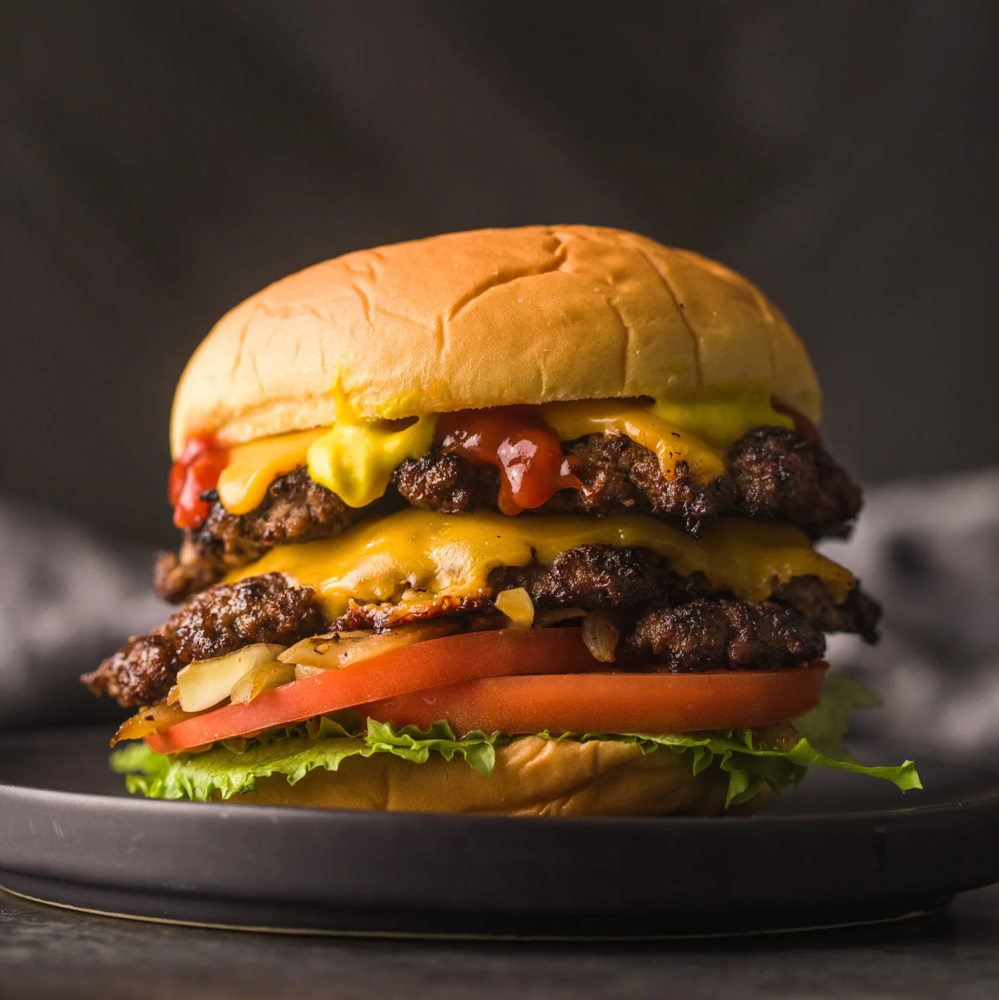

Smash Burger

Double pattie smash burger with cheese
Description:
This smash burger recipe makes super juicy burgers with crispy edges.
I prefer to cook these outdoors — they grill up very fast because of
the high heat, so make sure you have everything ready to go!
Recipes details
- Prep Time: 15 mins
- Cook Time: 5 mins
- Total Time: 20 mins
- Servings: 4
- Yield: 4 smash burgers
Ingredients:
- 4 hamburger buns
- 2 tablespoons butter, softened, or as needed
- 1 pound ground chuck beef (80% lean)
- 4 (6-inch) squares parchment paper
- salt to taste
- 4 slices American cheese
- burger toppings of choice
Cook's Notes
- Don't use meat that is leaner than 80/20 for best results, and make sure the meat is very cold.
- If you only have one spatula, wrap your other hand in an old dish towel for protection and use it to press down on the spatula with both hands.
- You can make 4 (4-ounce) patties instead of 8 (2-ounce patties), but I prefer the thinner patties that have a more crispy surface area.
- I buy American cheese freshly sliced from the deli, but individually wrapped slices will work, too.
How to Make a Smash Burger
- Prepare and heat the griddle.
- Butter and brown the buns.
- Form the meat into loosely-packed balls.
- Place each ball on the grill, cover with a piece of parchment, and smash.
- Sprinkle the meat with salt.
- Grill and assemble the smash burgers according to the detailed instructions below.
Home